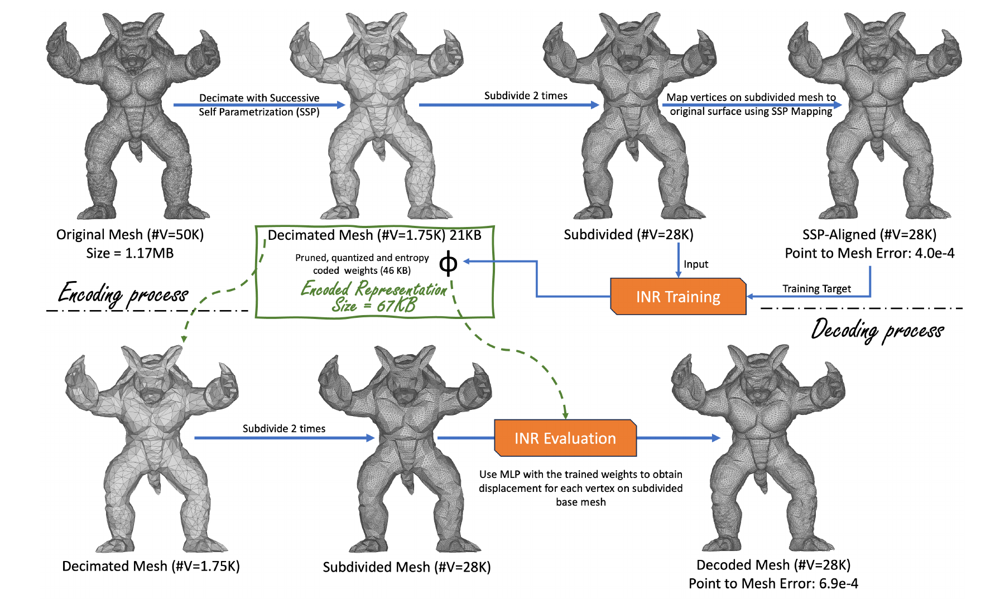
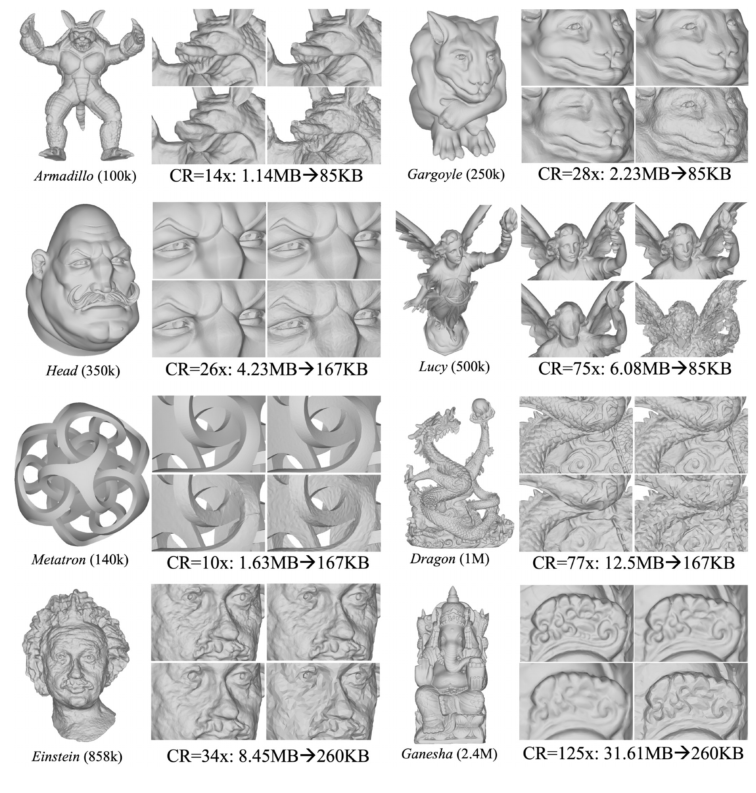
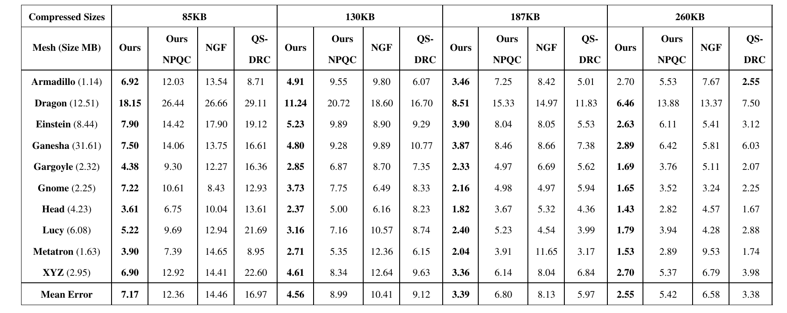

Implicit neural representations (INRs) have been successfully used to compress a variety of 3D surface representations such as Signed Distance Functions (SDFs), voxel grids, and also other forms of structured data such as images, videos, and audio. However, these methods have been limited in their application to unstructured data such as 3D meshes and point clouds. This work presents a simple yet effective method that extends the usage of INRs to compress 3D triangle meshes. Our method encodes a displacement field that refines the coarse version of the 3D mesh surface to be compressed using a small neural network. Once trained, the neural network weights occupy much lower memory than the displacement field or the original surface. We show that our method is capable of preserving intricate geometric textures and demonstrates state-of-the-art performance for compression ratios ranging from 4x to 380x.

Meshes with rich surface detail can take megabytes each, which makes them expensive to store and transmit at scale. Standard tools either quantize vertex positions, which loses precision, or simplify the mesh, which loses detail. Neural networks have proven remarkably compact for compressing images and implicit 3D surfaces, but had not been applied to triangle meshes directly. We keep a heavily simplified version of the mesh and store the fine detail as a displacement field in a tiny neural network. This preserves intricate surface texture at 4× to 380× compression.


@article{pentapati2025nmc,
title = {Mesh Compression with Quantized Neural Displacement Fields},
author = {Pentapati, Sai Karthikey and Phillips, Gregoire and Bovik, Alan C.},
journal = {Computer Graphics Forum},
volume = {44},
number = {2},
year = {2025},
doi = {10.1111/cgf.70074}
}